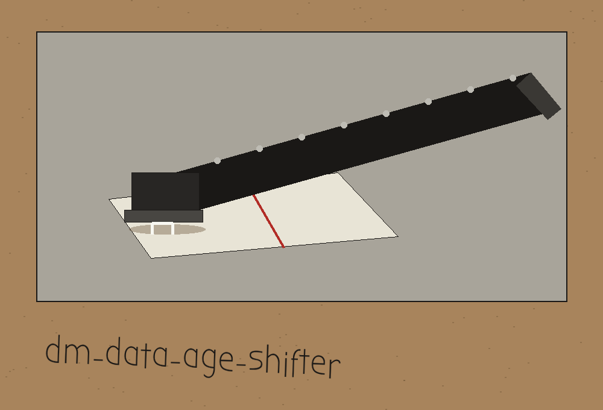

dm-data-age-shifter: The Zine Table at the Copy Shop

Earliest Shift, in Days. Latest Shift, in Days. Date Columns, Separated by Spaces.
One Draw for the Whole Run
Gaps Do Not Move
Refusals End the Run
Warnings Do Not
Sheet one: the job
This program moves dates. It takes a CSV file, chooses one signed whole number of days from inside a range the caller sets, and adds that same number to every value in every date column the caller names. Every gap survives untouched: the distance between two dates in the output is exactly the distance in the input, because both were carried by the same amount.
Sheet two: the true working call
python3 main.py, then the input CSV path, then the output CSV path, then the flag for date columns followed by one or more column names. Written with placeholders only: python3 main.py INPUT_CSV OUTPUT_CSV --date_columns COLUMN_NAME COLUMN_NAME. No real file, no real column from anyone's data, and no real date appears anywhere on this page.
Sheet three: install, fixed and said so
git clone https://github.com/ShadowGuard-AI/dm-data-age-shifter
Red pencil note: this clone line is fixed on this site. The README prints a different organisation name altogether, and this site does not repeat it here.
Sheet four: the controls, in parser order
Help flag first, the automatic one. Input file, positional. Output file, positional, carrying its refusal beside it: an output path that resolves to the input file is refused, exit 1, before any writing. Minimum days, an integer, default 0. Maximum days, an integer, default 365. Date columns, one or more names given after the flag, separated by spaces.
Sheet five: the single draw, at full size
One shift is picked per run, never one per column and never one per row. It is drawn from the caller's range exactly as set, sign included, with no quiet flipping of negative ranges into positive ones. The chosen number of days is written to the log.
Beside this, in equal size, the hard limit: the program has no seed control of any kind, so no run can be repeated on demand. The log line is the only record of what a given run did.
Sheet six: refusal and warning, kept separate
A named column that does not exist in the file ends the run at exit 1, and no output is written. A non empty value in a named column that will not parse as a date ends the run at exit 1, naming the column, the count of bad values, and the CSV rows they sit on. Empty cells are allowed to stay empty. By contrast, naming no date columns at all only draws a warning: the run continues, writes an output file whose dates are unchanged, and reports success.
Sheet seven: format honesty
Dates come out in the pandas default datetime form, not in the shape they went in. A column written day first in the input returns as ISO timestamps with a midnight time attached. The values are correct. The presentation is not preserved. That is stated plainly here, with no example date printed.
Sheet eight: requirements and endings
The requirements file names pandas at 2.1.0 or later, and nothing else. A missing input file ends the run at exit 1. A minimum set above the maximum ends it at exit 1. A file the reader cannot parse ends it at exit 1. A successful run ends by logging where the shifted output was saved. One more fact belongs on this sheet: the file is always read as if its first row were a header, with no flag to say otherwise.
Closing sheet: licence
Copyright (c) ShadowGuard-AI
That line prints the README licence line with the organisation corrected to the hyphenated form, and the change is labelled here as a correction made on the site.
Next to it, a separate fact. The repository LICENSE file contains the MIT License. Its holder line gives the pen name in full, then a parenthetical given name with a single initial, then the account handle. The line is not reproduced here, and the initial is not expanded.
The preserved README record
 # dm-data-age-shifter Shifts date and time fields in a dataset by a random interval within a specified range, preserving temporal relationships. One shift is drawn for the whole run and applied to every named date column, so gaps within a column and between columns are preserved. The signed shift is drawn from --min_days to --max_days as set, with no sign flip, and the applied shift is logged. - Focused on Tools designed to generate or mask sensitive data with realistic-looking but meaningless values ## Install `git clone https://github.com/ShadowStrikeHQ/dm-data-age-shifter` ## Usage `./dm-data-age-shifter [params]` ## Parameters - `-h`: Show help message and exit - `input_file`: Path to the input CSV file - `output_file`: Path to the output CSV file. It must not be the input file: if the output path resolves to the input file, the run refuses and exits 1 before any write. - `--min_days`: Minimum signed number of days to shift the dates by. Defaults to 0. - `--max_days`: Maximum signed number of days to shift the dates by. Defaults to 365. - `--date_columns`: List of column names containing date/time values. Separate multiple columns with spaces. ## Failure rules - If any named date column is not found, the run exits 1 and writes no output. With no --date_columns at all, the run still logs a warning that no dates will be shifted. - A non-empty value in a named date column that does not parse as a date refuses the run: the run exits 1 naming the column, the count, and the CSV rows, instead of blanking the value. Empty cells may remain empty. ## License Copyright (c) ShadowStrikeHQ